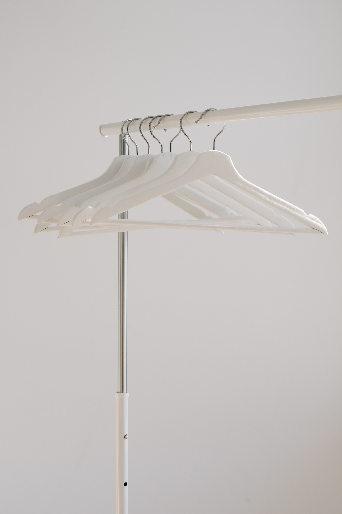

Clothing (also known as clothes and attire) is a collective term for garments, items worn on the body. Clothing can be made of textiles, animal skin, or other thin sheets of materials put together. The wearing of clothing is mostly restricted to human beings and is a feature of nearly all human societies. The amount and type of clothing worn depend on body type, social, and geographic considerations.
Some clothing can be gender-specific. Physically, clothing serves many purposes: it can serve as protection from the elements and can enhance safety during hazardous activities such as hiking and cooking. It protects the wearer from rough surfaces, rash-causing plants, insect bites, splinters, thorns and prickles by providing a barrier between the skin and the environment. (From:Wikipedia)